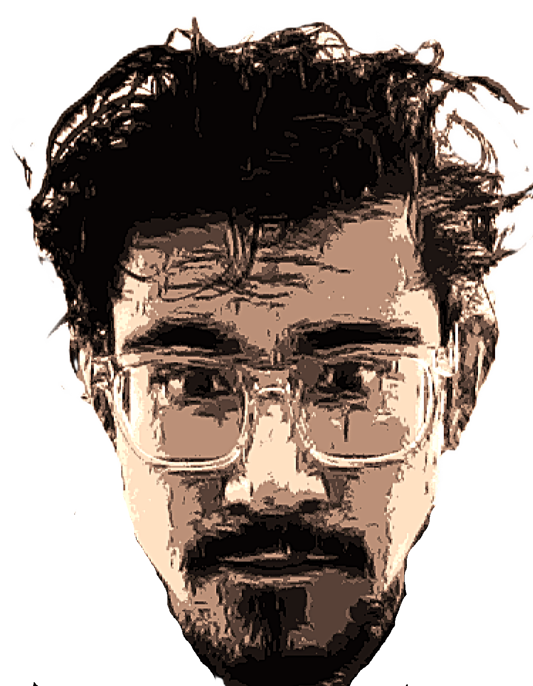
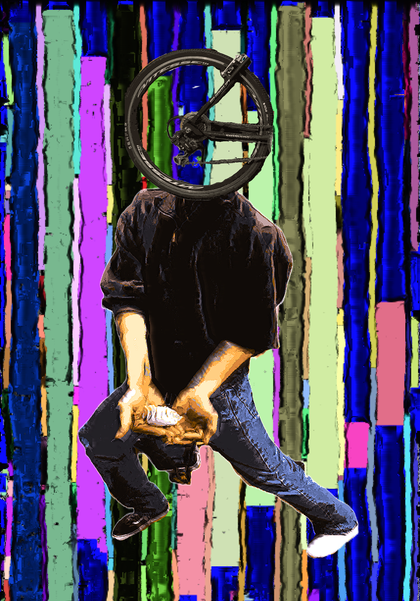

EDR

ICK

◑
◑
I'm a dedicated CS university student based in Southern California with experience in research, outreach, and education. With a unique interest in grassroots social change in and outside of software development, I explore sectors such as disability, education, and climate/energy. Such interests guide my dabbling into different languages, frameworks, and sectors within SWE.
In tandem with programming, I have also dedicated my life to biking and public transportation, as well as community work and physical arts. I believe its important to recognize the ways in much of the work that we do that is seemingly disjoint is not, and this principle is part of what guides my overall learning motivation.
WHAT: Visualizing algorithms (dijktra's, a*, depth-first search) in vanilla java with a ui made in swing. The start node (teal) attempts to find the target node (red) through the chosen algorithm. Blue pixels fill the area, showcasing explored areas. Once the target node is found, a green path is drawn to show the shortest path.
WHY: understanding of algorithm pathfinding, hardening java skills, art
FEATURES: custom hand-made pixel art, ability to add walls and generate random ones, clear board
WHAT: A series of algorithms that create generative art. The main one, extended difference of gaussians, is based off a University of Missouri research paper. Other algorithms include local binary pattern (custom), canny (cv), object (custom), kmeans (cv), and generate (custom). (see website for more info)
WHY: interesting applications with mathematical concepts, no javascript implementation of it, art
FEATURES: upload image or video, several parameters and algorithm combinations to choose from
WHAT: Hopfield networks retrieve patterns from "memory", inspired by the human brain. This group project implements a modern Hopfield network, which serves continous rather than binary states and an update rule that is similar to attention in transfomers. This an implementation inspired by this research paper
WHY: interesting connection to human biology, large amount of applications
FEATURES: CIFAR10 dataset with RGB and greyscale, vectorization for image comparison, better results than paper
WHAT: Tool that allows a user to control their computer without a mouse nor a quality camera with the help of a special glove. The main algorithm is the scale-invariant feature transform (SIFT) program which compares the euclidean distance of several different features. This this more of a proof of concept for an accessibility tool. Future iterations would include getting rid of the glove and creating an eye tracker.
WHY: doorstep toward addressing the digital divide with accessibility
FEATURES: special glove with shapes to detect orientation, calibration phase to better detect shapes, good performance
WHAT: Max Patch is tool used to make interactive software, primarily music, sound effects, and graphics. There are several parameters that can affect the music in the backend, but UI allows for binary. With Javascript, this binary is converted into the closest word it could find and then a corresponding video graphic. The script further analyzes the video and chooses the main "mood" that the video is portraying. Finally, the the video's audio is fed back into the music program. As such, seemingly random binary inputs are converted into art.
WHY: my inability to play an instrument but ability to program is an interesting merge
FEATURES: words and videos can be chosen from pre-selected list, several different paramters that change music and graphics
WHAT: Disaster simulation using the z3 optimizer. Teams and disasters (fire) and either manually or randomly created, each with different stats/resources. These parameters are fed into the optimizer which then outputs the best possible resource allocation. Each iteration updates the stats/resources of each team and disaster. The simulation is considered to be successful if all disasters are contained, and unsuccessful if not.
WHY: natural disasters are becoming more prevalent, testing z3 optimizer
FEATURES: custom-made UI in tkinter, add different types of disasters, manual and automatic team and disaster creation
WHAT: An analysis on emerging AI technology, including its integration in AR/VR, and its contribution to the digital divide for blind and visually impaired learners. Several papers and technical artifacts are evaluated on their impact in the education space. Based on this research, guidelines which are included in the paper have been created to better suit BVI learners.
WHY: advancements in technology further leave BVI learners behind, support for disability is integral for competent spaces, accessibility benefits everyone
FEATURES: N/A